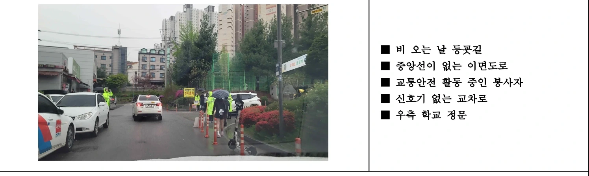

764. Hai cách lái xe nào là an toàn nhất trong tình huống sau?

- ①Lái xe chú ý cẩn thận hơn để đảm bảo an toàn cho người đi bộ đang che ô.
- ②Vì xung quanh có nhiều người đi bộ nên tăng tốc độ và đi nhanh qua.
- ③Dù không phải là khu vực bảo vệ trẻ em nhưng vì ở phía trước trường học nên phải chú ý lái xe đảm bảo an toàn cho người đi bộ.
- ④Tình huống phía trước có đường giao nhau không có đèn tín hiệu giao thông nên khó đảm bảo tầm nhìn hai bên trái phải, do đó cần lái xe chậm.
- ⑤Người đi bộ có thể xuất hiện giữa các xe đang đỗ, nên nhấn còi liên tục để cảnh báo và lái xe đi ㅏㅐqua.
Xem đáp án
Đáp án
① Lái xe chú ý cẩn thận hơn để đảm bảo an toàn cho người đi bộ đang che ô.
③ Dù không phải là khu vực bảo vệ trẻ em nhưng vì ở phía trước trường học nên phải chú ý lái xe đảm bảo an toàn cho người đi bộ.
Căn cứ
Dù không phải là khu bảo vệ trẻ em nhưng trên những con đường có nhiều người đi bộ và đặc biệt là vào những ngày mưa, tầm nhìn của người đi bộ bị hạn chế do có ô nên người lái xe cần chú ý hơn đến sự an toàn của người đi bộ. Tại các giao lộ không có tín hiệu, tầm nhìn không rõ do có ô tô đậu xung quanh, hãy dừng lại một lúc thay vì giảm tốc độ trước khi đi vào và tránh lái xe bấm còi liên tục mà không có lý do chính đáng.
Phần căn cứ là bản dịch máy để tham khảo.